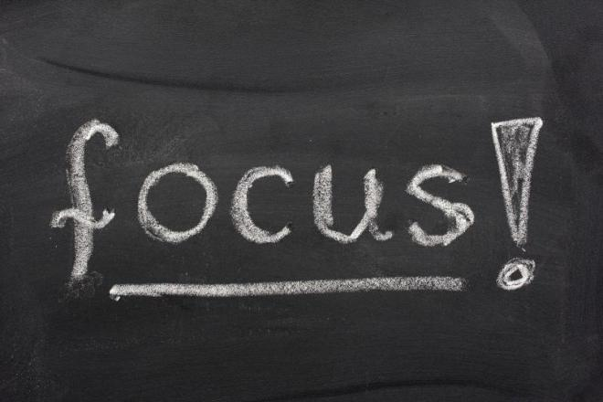

Hi Guys!
First time learnCodding I can't understand anything like a kid for the first time attend in the class kindergarten, how funny. What I did? I just listening tutor explain something new for me, seeing friends project, how they works on computer, what they types, why they uses many formula, what the result and many more. Those made me amazed what incredible tecnology is.
Just using one Laptop and smartphone as modem to connecting Internet. We can write anything we wants such as recipes, articles, news about something occurs around you or maybe share your journey in live to other people in a website with your own style. That was my experience faced new thing in front of me, sometimes I got scared, keep arguing between brain and feeling and then I'm stuck in curious feeling!
Tips to Understand New Things
"I hear and I forget. I see and I remember. I do and I understand"
- Look
Keep your eyes focus on what are people doing.
- Listen
Keep your mouth in silent mode. Don't make any noise and distrub them.
- Read
What we look in the same time we also read. Push away bored feeling for read anything. As Abraham Linclon said "A capacity and taste for reading gives access to whatever has already been discovered by others."
- Try
After we look something new, listen people speak and read. what we have to do is Try! Try everything looks good for yourself. If I can do, why not?
- Ask
Accumulate learning by study, understand what you learn by questioning. Be Brave to ask anything what you don't know yet or what are made you confused.
- Try again
Don't give up easyly, we should keep in try and learning. Anthony J. D'Angelo said in The College Blue Book "Develop a passion for learning. If you do, you will never cease to grow"
That's all tips and trick from me. I wish what I share is helpfull and give you easy life. Thanks for coming to my blog. ^^
